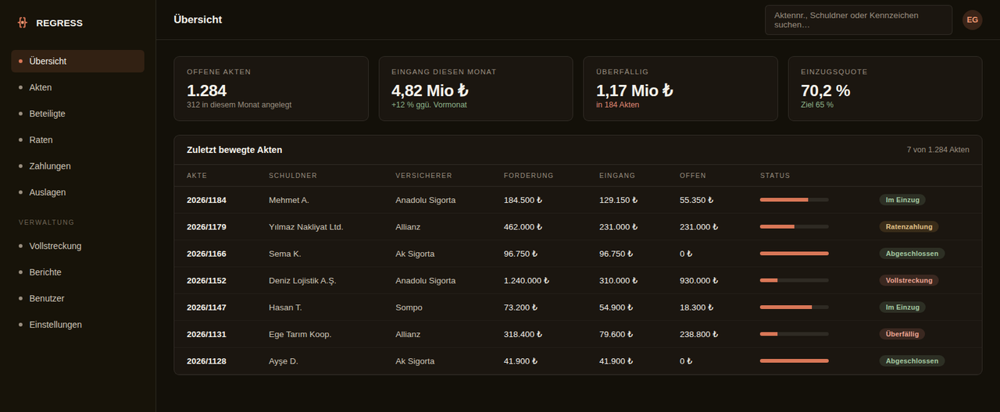
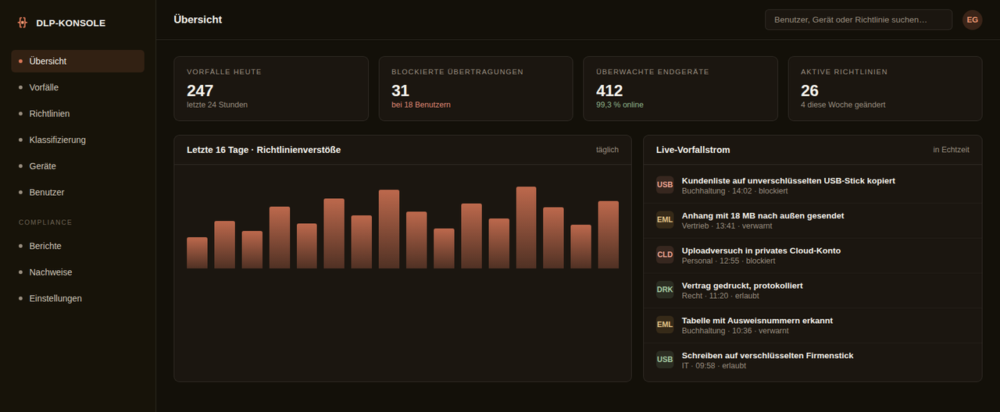

Regressverwaltung
Das gelöste Problem
Regressakten wurden in Tabellen geführt. Wer welche Rate gezahlt hatte, welche Akte abgelaufen war, wie viel in diesem Monat eingegangen war — jede Antwort musste von Hand zusammengestellt werden und war im Moment der Erstellung bereits veraltet.
Ein System, das den gesamten Vorgang an einer Stelle bündelt: vom Anlegen der Regressakte bis zum Abschluss des Forderungseinzugs. Raten, Zahlungen, Auslagen und Zinsberechnungen wurden aus manuellen Tabellen in eine prüfbare Struktur überführt. Sämtliche Altakten einer vor Jahren aufgesetzten Datenbank wurden ohne einen einzigen Verlust übernommen. Da das System im Haus laufen kann, verlassen Aktendaten das Unternehmen zu keinem Zeitpunkt.

Eingesetzte Technik
Kernfunktionen
- Akten, Beteiligte, Raten und Zahlungen auf einem Bildschirm
- Auslagen- und Zinsberechnung läuft automatisch
- Vollständige Übernahme aus dem Altsystem
- Eingehende E-Mails werden gelesen und der Akte zugeordnet
- Informationen werden per OCR aus Belegen gezogen
- Automatische Warnung bei überfälligen Akten
- Einzugsquote in Echtzeit
- Vollständiger Betrieb auf eigenen Servern möglich
Data Loss Prevention (DLP)
Das gelöste Problem
Niemand wusste, wohin Unternehmensdaten abfließen. Kopierte eine Mitarbeiterin die Kundenliste auf einen USB-Stick oder schickte sie an ihre private Adresse, blieb das unbemerkt — im Prüfungsfall müssen Sie darüber jedoch einen Nachweis vorlegen können.
Wir verhindern, dass Unternehmensdaten unbefugt das Haus verlassen: E-Mail-Anhänge, USB-Speicher, Cloud-Uploads und Ausdrucke eingeschlossen. Zunächst wird klassifiziert, welche Daten schützenswert sind, anschließend wird jede Aktion darauf protokolliert. Die Richtlinien schreiben wir für das jeweilige Haus; wir stülpen niemandem dieselbe Schablone über.

Eingesetzte Technik
Kernfunktionen
- Klassifizierung und Kennzeichnung schützenswerter Daten
- Kontrolle über USB, E-Mail und Cloud-Kanäle
- Sofortige Meldung von Richtlinienverstößen
- Nachweise und Belege für Datenschutzprüfungen
- Überwachung je Endgerät in Echtzeit
- Richtlinien nach Maß Ihres Hauses
- Protokollierung von Ausdrucken
- Regelmäßige Prüfberichte
Großschadenabwicklung
gokhan.ai — KI-Arbeitsbereich
Das gelöste Problem
Mitarbeitende luden Unternehmensunterlagen in öffentliche KI-Dienste. Was hochgeladen wurde, von wem und wohin diese Daten gelangten, war unbekannt.
Ein geschlossener, vom Unternehmen verwalteter Arbeitsbereich, in dem Mitarbeitende Excel-, PDF- und Word-Dateien hochladen und einer KI Fragen stellen. Wer wann was getan hat, wird protokolliert; die Unterhaltungen selbst bleiben privat und sind selbst für Administratoren nicht einsehbar. Ohne Bestätigung der Datenschutzhinweise öffnet sich kein Bildschirm, und Anmeldungen von einem neuen Gerät werden gesondert markiert.

Eingesetzte Technik
Kernfunktionen
- Excel, PDF und Word hochladen und auswerten lassen
- Benutzerverwaltung und Anmeldeprotokolle
- Datenschutzhinweise und Einwilligungsnachweis
- Geräteerkennung und Warnung bei neuen Geräten
- Nutzungsgrenzen je Benutzer
- Unterhaltungen sind privat — auch für Administratoren
- Gleiche Bedienung am Telefon und am Rechner
- Dokumente werden serverseitig verdichtet, das senkt die Kosten